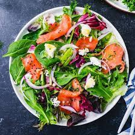

Salad recipe!

Salad is one of the most chosen items in the summer for myself. I love to make a fresh summer salad. I like to use veggies that are in season. since it is almost fall I will be using a lot more kale rather than the spinach mix I usually use.
Ingredients
- Kale
- Fresh seasonal veggies
- sea salt/black pepper
- avocado oil
- apple cider vinegar
Steps
- chop kale and massage with oil and let rest.
- chop up chosen veggies and add them to the kale that is resting.
- finally to make the dressing for one severing add 2 tbls of oil and 3 tbls of apple cider vinegar to a small bowl and add sea salt to taste and black pepper.
The best Salad youll ever make